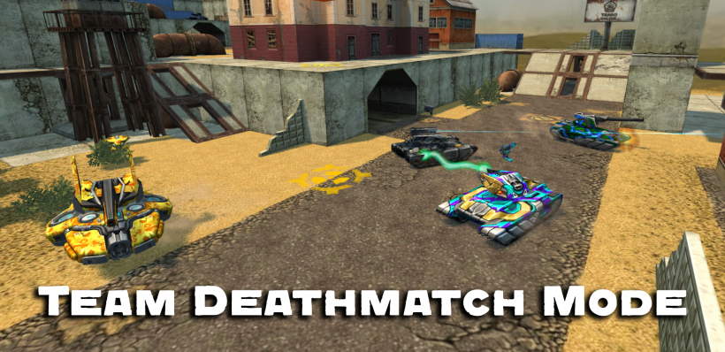
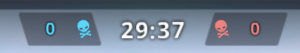

概括
团队对战是最简单的团队战斗模式。它本质上相当于死亡混战模式
除了玩家被分成团队，而不是独自一人。
目标是摧毁比对方球队更多的坦克。
战斗受到击杀次数（常规战斗中 150 次击杀）或时间（常规战斗中 15 分钟）的限制。
描述
在团队对战中，战斗机制与死亡混战模式非常相似。
唯一的区别是，在这里，玩家是团队合作的。目标是摧毁比对方更多的坦克。
每个团队成员都对结果负责，因为战斗的最终得分取决于团队的表现和谨慎程度。
每摧毁一个坦克，一个团队的击杀数获得 1 分。
单个玩家每消灭一个敌人可获得 10 经验值和 15 战斗分数
而协助击杀的两名或更多玩家将获得 5 战斗分数和 5 经验值。
在自毁的情况下，对方队没有得到任何积分，这也是这种游戏模式的一个重要因素。
你需要记住的第一件事是保持你的 杀/死 比率高于 1。
如果团队中的每个玩家摧毁的坦克比他们被杀死的次数多，那么胜利是有保证的。
此外，与死亡混战模式不同，玩家的出生点位于他们的基地。
要开始战斗，你需要到地图的中心，甚至到对方球队的基地。
因此，击杀数量会比死亡混战模式低很多。
通常，TDM 中最有效的玩家是露营者，他们使用远程炮塔
例如 马格南、火箭炮、激光炮 和 镭射炮
因为他们能够在不被杀死的情况下累积击杀数。
指示器

团队对战计分器
计分器显示每支队伍的击杀数（1 击杀 = 1 分）
当团队中的某人自毁时，从团队中扣除 1 分。
有趣的事实
如果一个玩家设法自己杀死一个敌人，将获得 15 分的战斗分数和 40 的经验值以及 1 分的团队总分。
自毁后，玩家将失去其战斗分数的 15 分，并使团队损失 1 次击杀。
如果多名玩家成功摧毁一个敌人，击杀的坦克手将获得 15 分，而在敌人被击杀之前对敌人造成伤害的其他坦克手将获得 5 分。
用磁力炮治疗队友可以让玩家的战斗得分增加 12 点，并获得 20 点经验值。
在更新 1.91.0 (26.06.2012) 发布之前，参与破坏的玩家之间不会共享用于破坏敌人的经验；所有经验都给了摧毁坦克的人。
2012年开发团队与一队名为“1000人之战”的队员之间的对战以团队对战模式进行